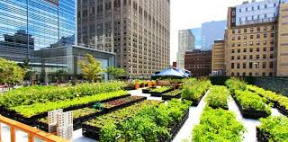
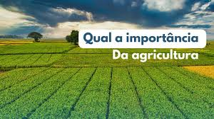
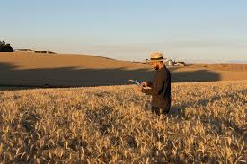

Figura 1-Hortas Urbanas
 Fonte: JORNAL CELEIRO, 2020.O que é a Conexão "Campo-Cidade"?
A "conexão campo cidade" refere-se à interdependência recíproca entre as áreas rurais e urbanas, onde cada uma delas depende da outra para prosperar. O campo fornece alimentos, matérias-primas e recursos naturais para a cidade, enquanto a cidade oferece mercado consumidor, tecnologia, serviços e infraestrutura para o campo.
Figura 2-Plantação de Grãos
 Fonte: QUAL A IMPORTÂNCIA, 2023.Qual a Importância da Agricultura para a Cidade?
A agricultura é crucial para as cidades, garantindo segurança alimentar, desenvolvimento econômico e social, e contribuindo para a sustentabilidade. Ela fornece alimentos, matéria-prima para indústrias, gera empregos e renda, e ajuda na preseração ambiental. A agricultura urbana e periurbana, em particular, oferece benefícios como acesso a alimentos frescos, melhoria da saúde e aumento da biodiversidade.
Figura 3-Campo de Trigo
 Fonte: O PRESENTE RURAL, 2024.Qual a Importância da Cidade para a Agricultura?
A importância da cidade para a agricultura reside principalmente na sua função como centro de consumo, processamento e comercialização da produção agrícola, e também na sua crescente influência na agricultura urbana e periurbana. As cidades não apenas recebem alimentos do campo, mas também transformam e agregam valor a esses produtos, tornando o campo dependente em alguns casos. A agricultura urbana e periurbana, por sua vez, traz benefícios como melhoria da saúde, segurança alimentar e nutricional, geração de empregos e renda, e conservação da biodiversidade.